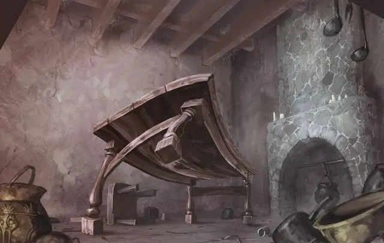

Оживлённый стол
Animated Table
Большой Конструкт, без мировоззрения

Класс Доспеха 15 (природный доспех)
Хиты 39 (6к10 + 6)
Скорость 40 футов
| мод | спас | ||
|---|---|---|---|
| СИЛ | 18 | +4 | +4 |
| ЛОВ | 8 | −1 | −1 |
| ТЕЛ | 13 | +1 | +1 |
| мод | спас | ||
|---|---|---|---|
| ИНТ | 1 | −5 | −5 |
| МДР | 3 | −4 | −4 |
| ХАР | 1 | −5 | −5 |
Иммунитет к урону психическая энергия, яд
Иммунитет к состояниям глухота, испуг, истощение, окаменение, ослепление, отравление, очарование, паралич
Чувства слепое зрение 60 футов (слеп за его пределами), пассивное Восприятие 6
Опасность 2 (450 опыта)
Бонус мастерства +2
Особенности
Восприимчивость к антимагии. Стол недееспособен, пока находится в пределах области преграды магии [antimagic field]. Став целью рассеивания магии [dispel magic], стол должен преуспеть в спасброске Телосложения Сл спасброска заклинателя, иначе потеряет сознание на 1 минуту.
Обманчивая внешность. Пока стол остается без движения, она неотличим от обычного стола.
Атака в броске. Если стол переместится как минимум на 20 футов по прямой к цели, а затем в том же ходу попадет по ней атакой тараном, цель дополнительно получает от атаки 10 (3к6) дробящего урона. Если цель — существо, она должна преуспеть в спасброске Силы Сл 15, иначе будет сбита с ног.
Природа конструкта. Оживший стол не нуждается в воздухе, пище, воде или сне.
Действия
Таран. . Рукопашная атака оружием: +6 к попаданию, досягаемость 5 фт., одна цель. Попадание: 13 (2к8 + 4) дробящего урона
Описание
Некоторые из защитников крепости в Кузнице Ярости - это ожившие объекты, которые были созданы давным-давно магом-дварфом Арундилом. Среди них есть и оживший стол.